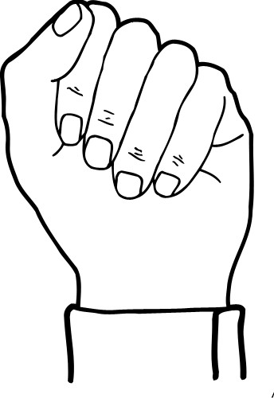

Help
FAQ
Q: How should I start a conversation?
A: You have to just click the main button in the center of the window.
Q: It seems that program didn't understand my gesture, shows different letters than it supposed to show. What should I do?
A: We cannot back the letters we typed :( Instead, put hand near your camera in a position shown in the image below: 